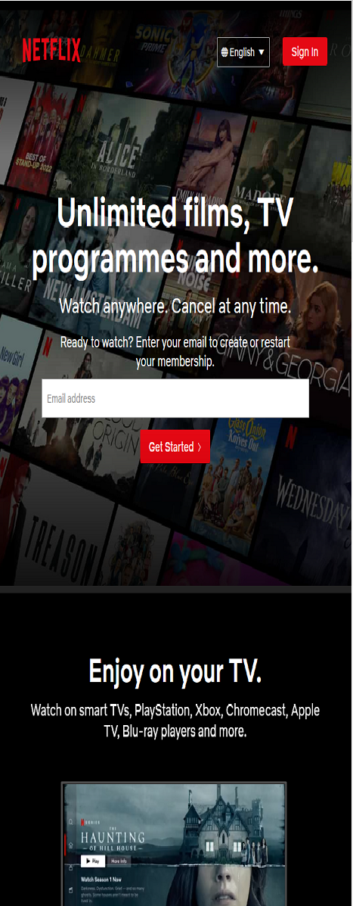

Repetition - YouTube
It's a given, Youtube's main content is just that, content made by others. Video after video, short to long form, comedy skit to video
analysis. Nothing but videos on everypage of the site, and that's the point, it's YouTube.
Proximity - MondoShop
Mondoshop, a professional website that sells posters, excercises proximity. The menu, shopping cart, and search buttons are at the top,
while new items are up for pre-order, and the newest items ready to sell are listed right below.
Visual Hierarchy - Netflix
I believe Netlfix reflects the order of Hierarchy very well. Size,
color, and contrast are all at use here, and that reflects how users
operate the site as well. Because they used this design principle, you
focus in what they're selling, the content they're offering, which only
inlfuences the user.
